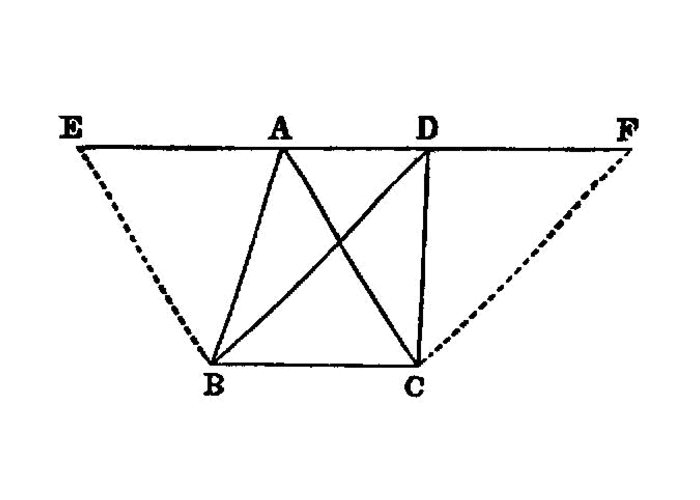

triangles in parallels equality¶
{kind=link}
Triangles which are on the same base and in the same parallels are equal to one another.
===
Let ABC, DBC be triangles on the same base BC and in the same parallels AD, BC; I say that the triangle ABC is equal to the triangle DBC.
Let AD be produced in both directions to E, F; through B let BE be drawn parallel to CA, [I.31] and through C let CF be drawn parallel to BD. [I.31]
Then each of the figures EBCA, DBCF is a parallelogram; and they are equal,
for they are on the same base BC and in the same parallels BC, EF. [I.35]
Moreover the triangle ABC is half of the parallelogram EBCA; for the diameter AB bisects it. [I.34]
And the triangle DBC is half of the parallelogram DBCF; for the diameter DC bisects it. [I.34]
[But the halves of equal things are equal to one another.] [^I.37:1]
Therefore the triangle ABC is equal to the triangle DBC.
Therefore etc.
## References
[I.31]: /elem.1.31 “Book 1 - Proposition 31” [I.34]: /elem.1.34 “Book 1 - Proposition 34” [I.35]: /elem.1.35 “Book 1 - Proposition 35”
## Footnotes
- [^I.37:1]: But the halves of equal things are equal to one another
Here and in the next proposition Heiberg brackets the words <quote>But the halves of equal things are equal to one another</quote> on the ground that, since the <title>Common Notion</title> which asserted this fact was interpolated at a very early date (before the time of Theon), it is probable that the words here were interpolated at the same time. Cf. note above (p. 224) on the interpolated <title>Common Notion</title>.